# 아쉽게도 신규 항목인 istio, kube-ops-view는 실습 실패
- istio: `myhome.yaml` 을 어떻게 생성할지 몰라서 중단
- kube-ops-view: A레코드에 제대로 잡히지 않음
지난 1주차에 이어, 이번 주에는 EKS의 네트워크 구성에 대해 알아보는 시간이었습니다.
직전 스터디에서도 바로 광탈당하나?하며 밤과 주말을 하얗게 불태웠을 정도로
가장 고난도라고 생각했던 네트워크를 다시 만나니 이제 1% 친근감이 느껴지고 있네요.
자 그럼 해보도록 합시다.
1. cloudformation을 활용한 EKS 원클릭 구성
- 학습을 위해, 이번에도 가시다님이 준비해주신 원클릭 배포 yaml을 활용하여 배포.
- 완전 배포까지 대략 20분 가량 소요
- IAM에서 미리 발급해둔 액세스키/시크릿키를 알아두어야합니다.
# 원클릭 셋업
aws cloudformation deploy --template-file ~/Documents/aews/eks-oneclick.yaml --stack-name myeks --parameter-overrides KeyName=aews SgIngressSshCidr=$(curl -s ipinfo.io/ip)/32 MyIamUserAccessKeyID={ACSSKEY|AKIA..} MyIamUserSecretAccessKey={SECUKEY|7ob..} ClusterBaseName=myeks --region ap-northeast-2
# 컨트롤 플레인(마스터노드) 접속 확인
ssh -i ~/.ssh/aews.pem ec2-user@$(aws cloudformation describe-stacks --stack-name myeks --query 'Stacks[*].Outputs[0].OutputValue' --output text)
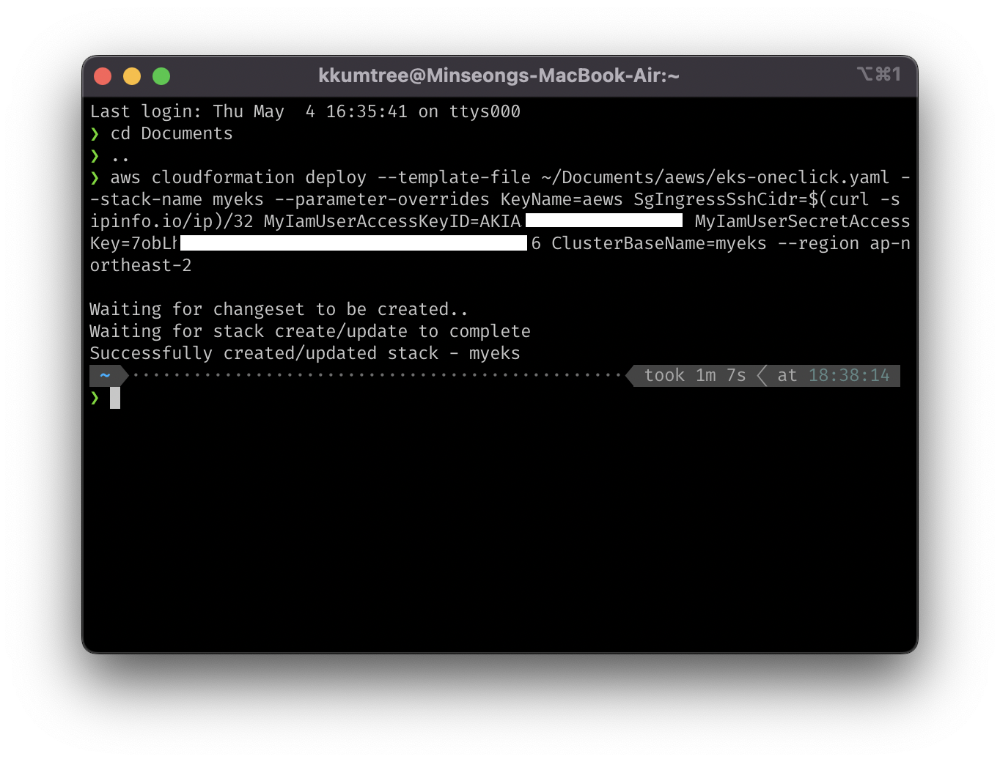
2. AWS VPC CNI w/기본 셋업 (in Control Plane)
- 네임스페이스는 미리 default로 설정.
이걸 깜박해서, 지난 스터디 때 헛된 시행착오를 반복했던 이력이 있음. - (워커)노드 IP 확인 및 변수 지정
워커노드는 EKS에서데이터플레인이라고도 함. - eksctl addon으로 설치된 아래 3가지 항목의 정상 설치 확인
- codedns
- kube-proxy
- vpc-cni
- 스터디에서는 경이로운(?) AWS VPC CNI를 사용.
Calico CNI와 달리 데이터플레인(노드)의 AWS ENI(Elastic Network Interface)와 Pod가 같은 네트워크 대역(CIDR)을 사용한다! - 예시:
- eth0(ENI): 10.10.1.1/24
- Pod1: 10.10.1.10
- Pod2: 10.10.1.20
- 실제로도 데이터플레인과 Pod가 같은 네트워크 대역을 사용한다.
(실습해보니 왜 IP까지 동일하지…? CIDR /32가 걸린건가? 혼란에 빠졌다!) (To-Do)
# default 네임스페이스 설정
kubectl ns default
# 데이터플레인 IP 확인 및 변수 지정
N1=$(kubectl get node --label-columns=topology.kubernetes.io/zone --selector=topology.kubernetes.io/zone=ap-northeast-2a -o jsonpath={.items[0].status.addresses[0].address})
N2=$(kubectl get node --label-columns=topology.kubernetes.io/zone --selector=topology.kubernetes.io/zone=ap-northeast-2b -o jsonpath={.items[0].status.addresses[0].address})
N3=$(kubectl get node --label-columns=topology.kubernetes.io/zone --selector=topology.kubernetes.io/zone=ap-northeast-2c -o jsonpath={.items[0].status.addresses[0].address})
echo "export N1=$N1" >> /etc/profile
echo "export N2=$N2" >> /etc/profile
echo "export N3=$N3" >> /etc/profile
echo $N1, $N2, $N3
# 데이터플레인 <-> 컨트롤플레인 ssh 접속을 위해 모든 프로토콜 허용
NGSGID=$(aws ec2 describe-security-groups --filters Name=group-name,Values=*ng1* --query "SecurityGroups[*].[GroupId]" --output text)
aws ec2 authorize-security-group-ingress --group-id $NGSGID --protocol '-1' --cidr 192.168.1.100/32
# 노드 ssh 접속 확인
ssh ec2-user@$N1 hostname
ssh ec2-user@$N2 hostname
ssh ec2-user@$N3 hostname
# eksctl addon 확인
eksctl get addon --cluster $CLUSTER_NAME
# 2023-05-04 19:04:32 [ℹ] Kubernetes version "1.24" in use by cluster "myeks"
# 2023-05-04 19:04:32 [ℹ] getting all addons
# 2023-05-04 19:04:33 [ℹ] to see issues for an addon run `eksctl get addon --name <addon-name> --cluster <cluster-name>`
# NAME VERSION STATUS
# coredns v1.9.3-eksbuild.3 ACTIVE
# kube-proxy v1.24.10-eksbuild.2 ACTIVE
# vpc-cni v1.12.6-eksbuild.1 ACTIVE
# AWS VPC CNI 관련
# 각각 노드(데이터플레인)IP 와 Pod IP 확인하는 명령어
aws ec2 describe-instances --query "Reservations[*].Instances[*].{PublicIPAdd:PublicIpAddress,PrivateIPAdd:PrivateIpAddress,InstanceName:Tags[?Key=='Name']|[0].Value,Status:State.Name}" --filters Name=instance-state-name,Values=running --output table
kubectl get pod -n kube-system -o=custom-columns=NAME:.metadata.name,IP:.status.podIP,STATUS:.status.phase
# kube-proxy config 확인 (mode: “iptables” 사용)
kubectl describe cm -n kube-system kube-proxy-config | grep mode
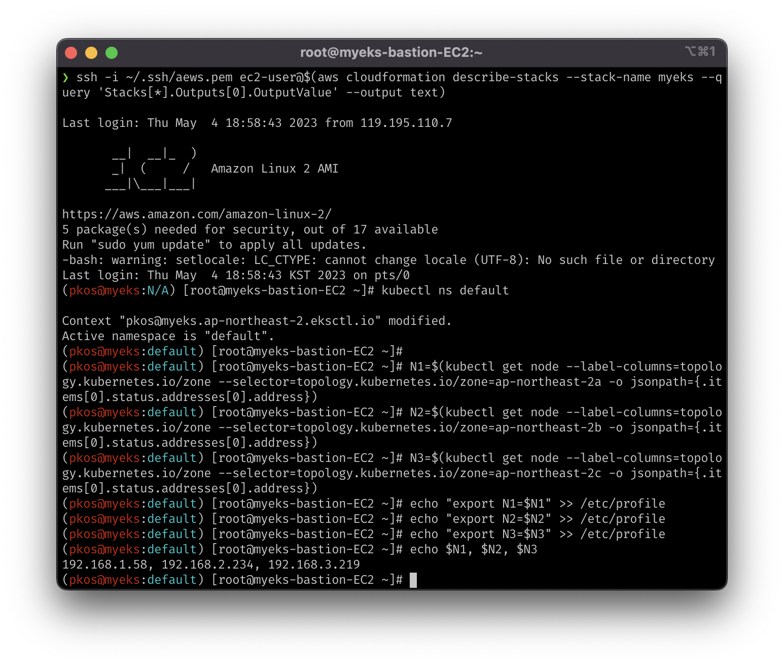
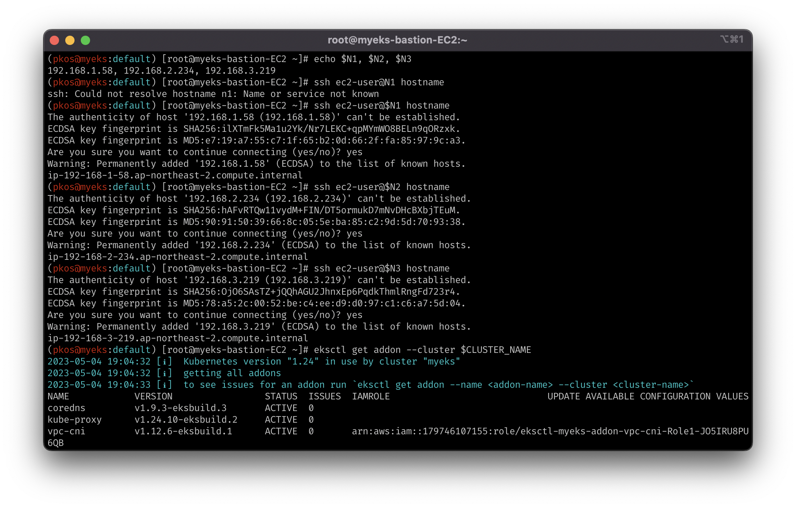
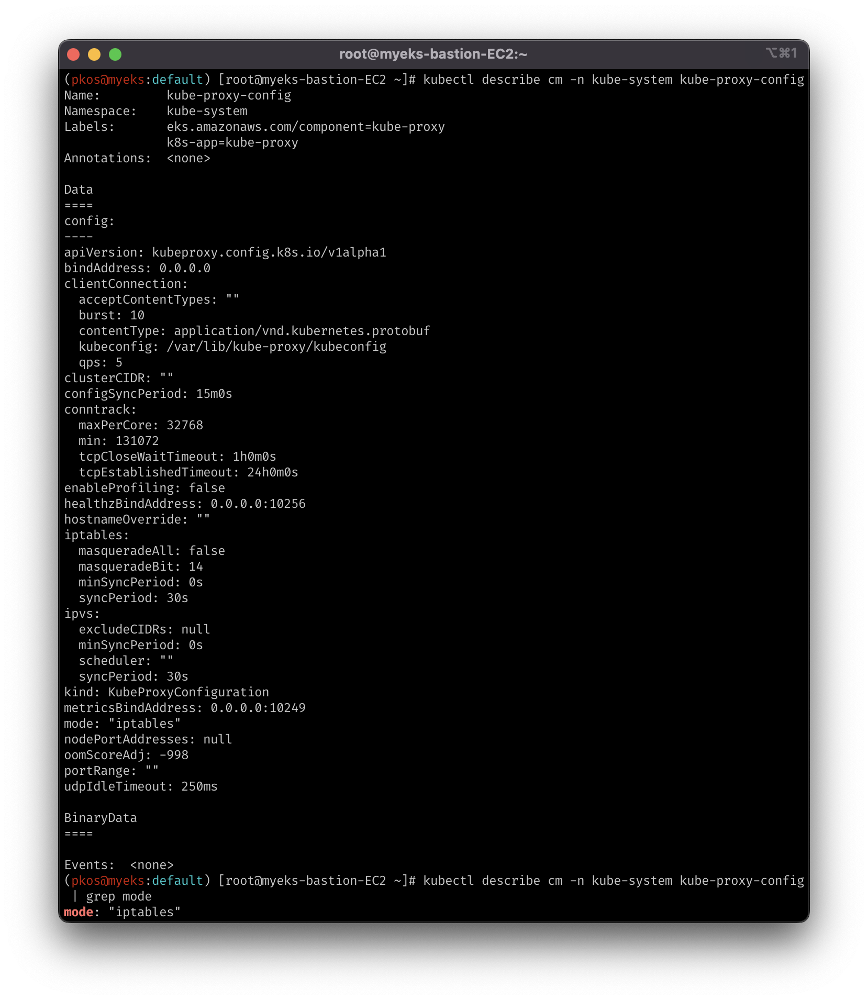
2-1. kube-proxy에서 ipvs 대신 iptables를 사용하는 이유?
-
가시다님이 설명하시길 ARP고정이나 가상 인터페이스 이슈 등으로 iptables를 쓰는 것으로 보인다고 하였음.
-
더 찾아보니, 해당 이슈는
19년 1월부터 제기되어 왔음.
참조: AWS-github -
22년 12월에 ipvs에 대한 지원이 GA되었음.
참조: AWS-blog -
ipvs가 iptables보다 나은가?
해당 내용은 KubeCon Europe 2019에서 발표된 내용에서 언급된다.- 아래와 같이 서비스의 수에 따라 시간복잡도에 의해 발생하는 지연을 줄일 수 있다고 한다. (iptables: O(N), ipvs: O(1))
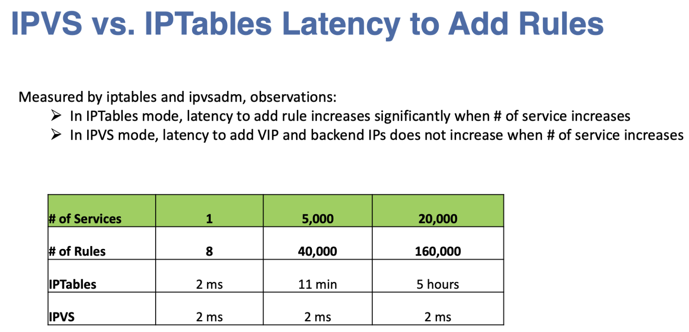
3. 데이터플레인(노드)의 네트워크 기본 정보 확인
- 노드에 tcpdump 등 네트워크 관련 도구를 설치를 하여 확인해본다.
- k8s CNI : 쿠버네티스의 네트워크 환경을 구성해주는 플러그인 (Container Network Interface)
# 각 데이터플레인에 도구 설치
ssh ec2-user@$N1 sudo yum install links tree jq tcpdump -y
ssh ec2-user@$N2 sudo yum install links tree jq tcpdump -y
ssh ec2-user@$N3 sudo yum install links tree jq tcpdump -y
# CNI 정보 확인(비슷비슷하므로 N2만 진행)
ssh ec2-user@$N2 tree /var/log/aws-routed-eni
ssh ec2-user@$N2 cat /var/log/aws-routed-eni/plugin.log | jq # IP 할당시 CIDR 32 확인
ssh ec2-user@$N2 cat /var/log/aws-routed-eni/ipamd.log | jq # maxENI 5개, 할당된 IP 1개 확인
ssh ec2-user@$N2 cat /var/log/aws-routed-eni/egress-v4-plugin.log | jq #
# 네트워크 정보 확인 : eniY는 pod network 네임스페이스와 veth pair
ssh ec2-user@$N2 sudo ip -br -c addr
ssh ec2-user@$N1 sudo ip -c addr
ssh ec2-user@$N2 sudo ip -c route
ssh ec2-user@$N1 sudo iptables -t nat -S # iptables 룰 확인
ssh ec2-user@$N2 sudo iptables -t nat -L -n -v
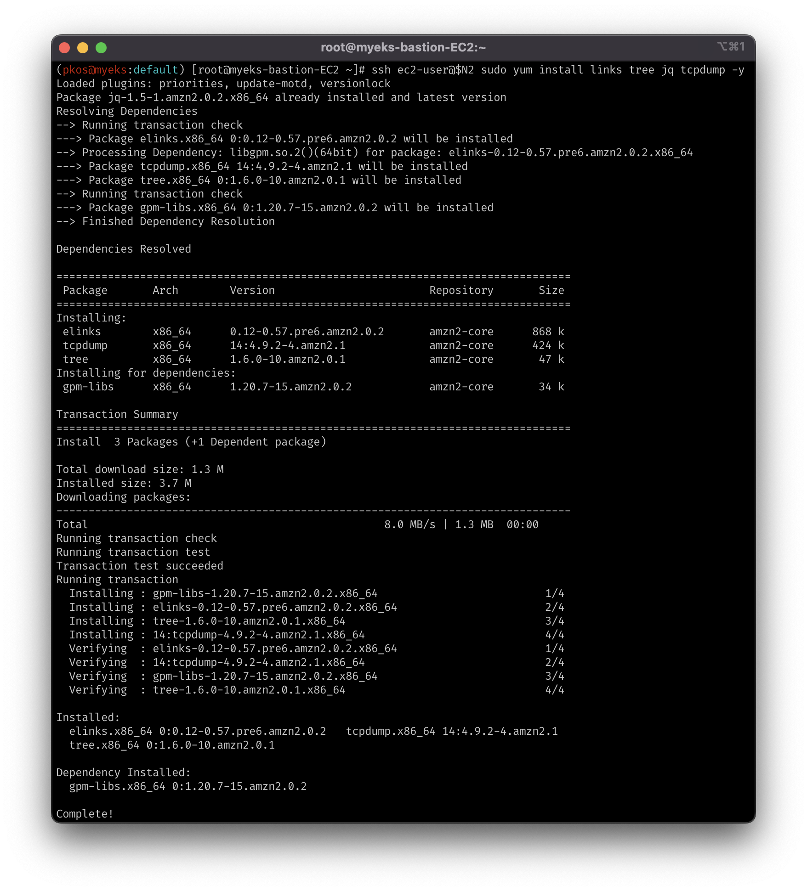
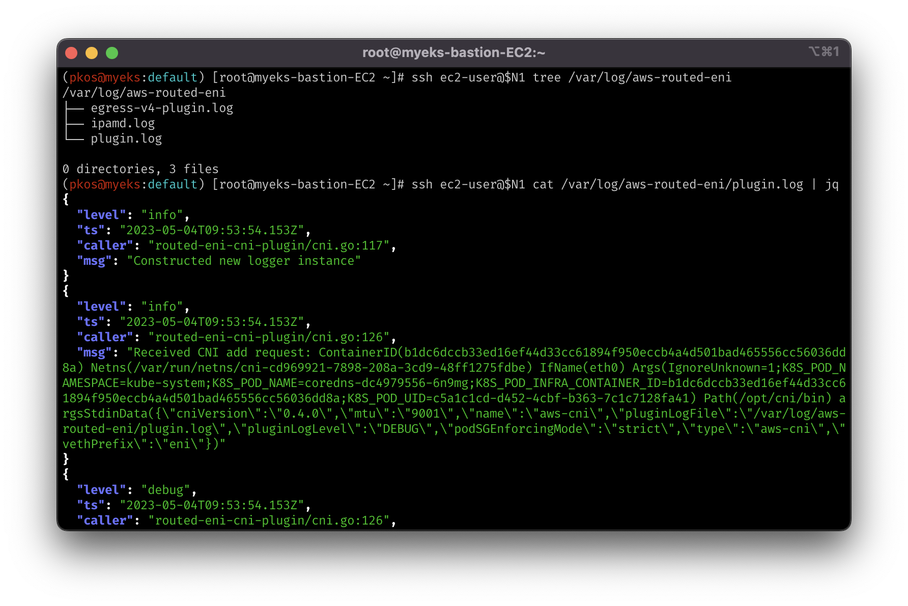
3-1. 데이터플레인의 기본 네트워크 정보 확인: 보조 IPv4 주소 확인
- 가시다님이 제공해주신 장표와 함께 확인.
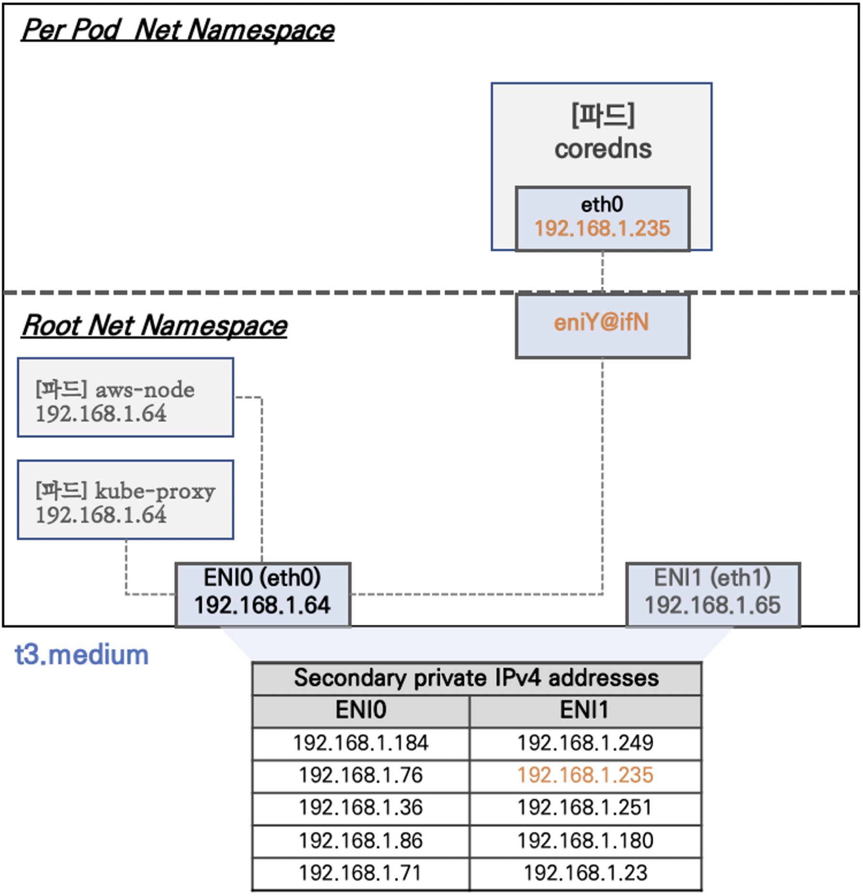
- (coredns Pod 기준)AWS 웹콘솔에서 확인해보면, 2가지 IP가 있음.
- 프라이빗 주소 IP:
컨트롤데이터플레인의 IP주소 - 보조 프라이빗 주소 IP:
- 데이터플레인에 Pod가 생성되면 바로 IP를 붙이기 위해 예약된 IP
- L(ocal)-IPAM Warm IP Pool
- 새로운 Pod에 할당할 Pool이 없으면, 새로 ENI(eth1 등)을 만들어서 할당함 (3-3 참조)
- 프라이빗 주소 IP:
- 스크린샷에서는 veth 페어의 IP 주소는
192.168.2.86임을 확인.
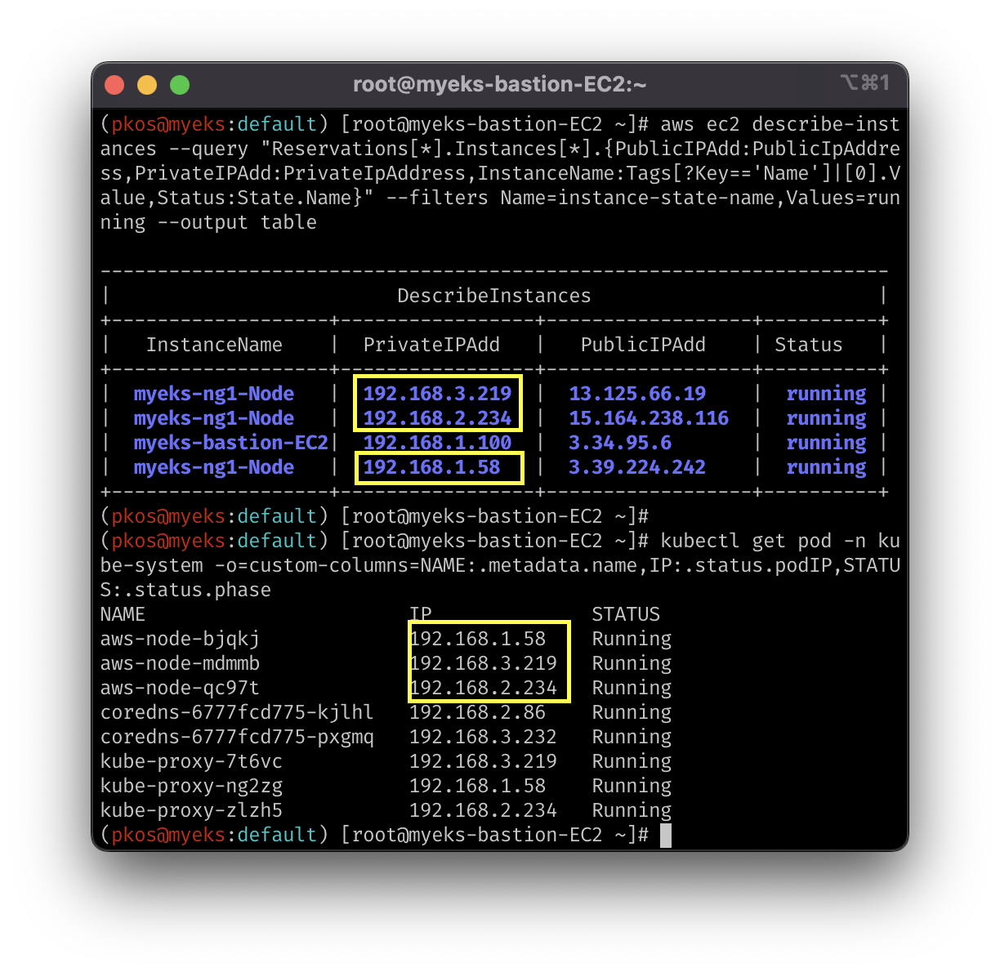
# coredns 파드 IP 정보 확인
# 아래 스크린샷을 보면 알듯이 한국 리전 B존의 노드에 생성된 coredns 파드의 IP임을 알 수 있었다.
kubectl get pod -n kube-system -l k8s-app=kube-dns -owide
# 노드의 라우팅 정보 확인 >> EC2 네트워크 정보의 '보조 프라이빗 IPv4 주소'와 비교
# 웹 콘솔에서 한국 리전 B로 확인했으므로, N2의 정보를 확인.
# veth 페어의 IP 주소는 Pod의 IP 주소와 동일함.
ssh ec2-user@$N2 sudo ip -c route
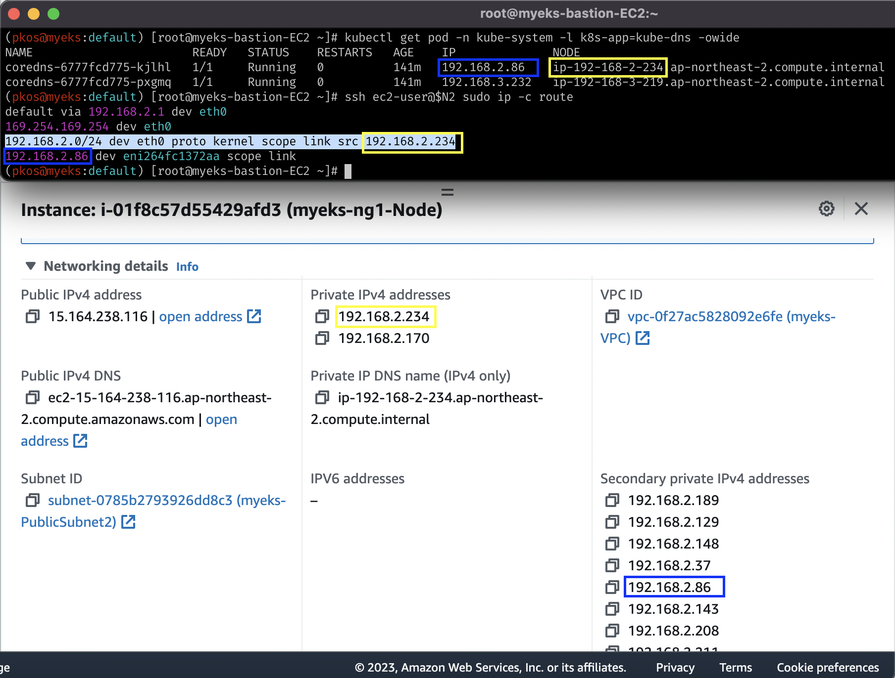
3-2. veth(v-eth, virtual ethernet interface)
- 단어를 보고 단박에 가상eth 인건 알았지만, 자세한 건 아래의 글을 통해서 알 수 있음.
- 아래까지 참고한다면, veth의 실제를 알 수 있을 것으로 판단.
3-3. 테스트용 파드 생성 w/netshoot
- nicolaka/netshoot a.k.a. 네트워크 장애해결용 맥가이버칼
- 다른 터미널로 데이터플레인 모니터링을 병행
- 스크린샷을 참조하면 N1에서 처음에 네트워크 인터페이스가 하나 밖에 없다는 것을 알았으므로,
이번 실습을 통해 네트워크 어댑터가 하나 더 생기는 것을 관찰하기 위해서임2.에서 생겼던 궁금증이 약간? 해소된 것 같다.
# (다른 터미널을 띄워서) 아래와 같이 3개를 모니터링
ssh ec2-user@$N1
watch -d "ip link | egrep 'eth|eni' ;echo;echo "[ROUTE TABLE]"; route -n | grep eni"
ssh ec2-user@$N2
watch -d "ip link | egrep 'eth|eni' ;echo;echo "[ROUTE TABLE]"; route -n | grep eni"
ssh ec2-user@$N3
watch -d "ip link | egrep 'eth|eni' ;echo;echo "[ROUTE TABLE]"; route -n | grep eni"
# 컨트롤플레인에서 netshoot 파드 생성 명령
# 그러면 각 데이터플레인에서 변화가 생기는데
# 이번 경우에는 $N3에서 eth1이 생성됨을 확인할 수 있음
cat <<EOF | kubectl create -f -
apiVersion: apps/v1
kind: Deployment
metadata:
name: netshoot-pod
spec:
replicas: 3
selector:
matchLabels:
app: netshoot-pod
template:
metadata:
labels:
app: netshoot-pod
spec:
containers:
- name: netshoot-pod
image: nicolaka/netshoot
command: ["tail"]
args: ["-f", "/dev/null"]
terminationGracePeriodSeconds: 0
EOF
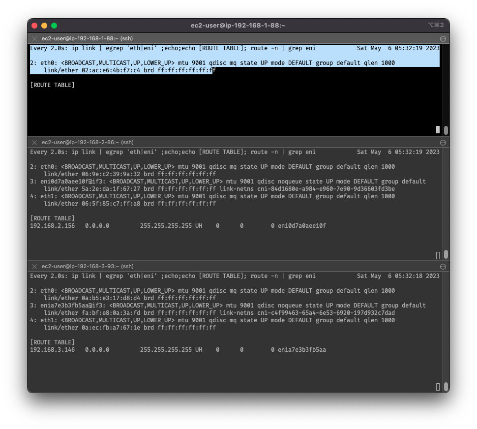
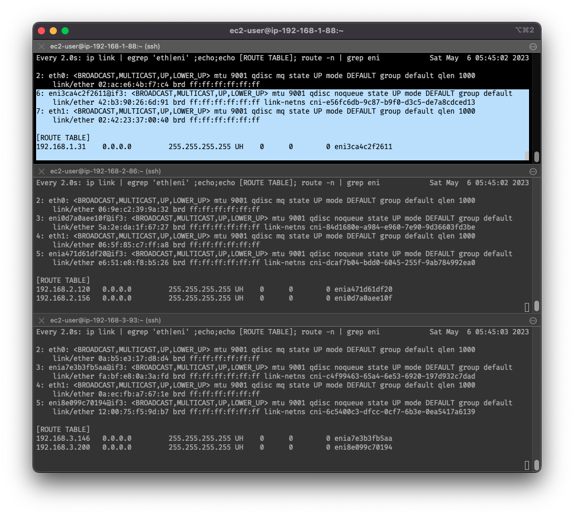
4. 데이터플레인(노드)간 통신 확인
- AWS VPC CNI를 쓰는 경우, NAT 동작(Overlay) 없이, VPC 내부에서 통신이 가능하다.
- 데이터플레인에 있는 ENI(eth0 등)을 타고 노드 간 통신을 한다.
# 파드 이름 변수 지정
PODNAME1=$(kubectl get pod -l app=netshoot-pod -o jsonpath={.items[0].metadata.name})
PODNAME2=$(kubectl get pod -l app=netshoot-pod -o jsonpath={.items[1].metadata.name})
PODNAME3=$(kubectl get pod -l app=netshoot-pod -o jsonpath={.items[2].metadata.name})
# 파드 IP 변수 지정
PODIP1=$(kubectl get pod -l app=netshoot-pod -o jsonpath={.items[0].status.podIP})
PODIP2=$(kubectl get pod -l app=netshoot-pod -o jsonpath={.items[1].status.podIP})
PODIP3=$(kubectl get pod -l app=netshoot-pod -o jsonpath={.items[2].status.podIP})
# 각 파드(데이터플레인)에서 tcpdump로 ping 패킷 미리 대기
# [$N1, $N2, $N3]
sudo tcpdump -i any -nn icmp
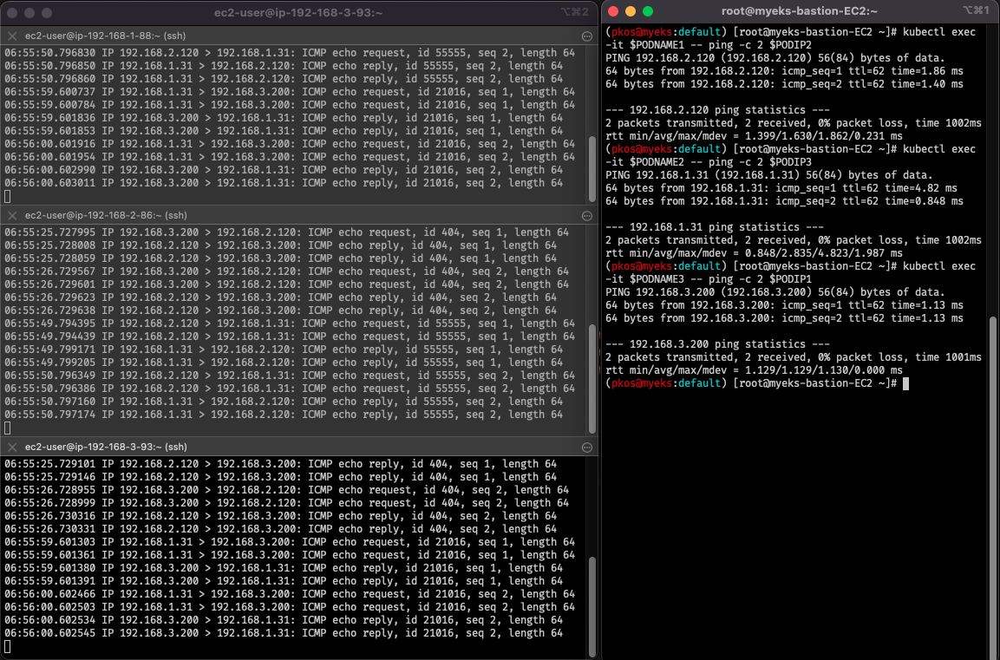
번외: eth0 나 eth1 만 패킷 모니터링해보기
- 이론 상으로는 eth0의 인터페이스를 쓰고 있어서 eth1에서는 안 떠야(?)하는데,
실제$N2에서는 eth0은 안쓰고, eth1을 쓰는 것으로 확인됨. 무슨 일인가.. To-Do
sudo tcpdump -i eth0 -nn icmp
sudo tcpdump -i eth1 -nn icmp
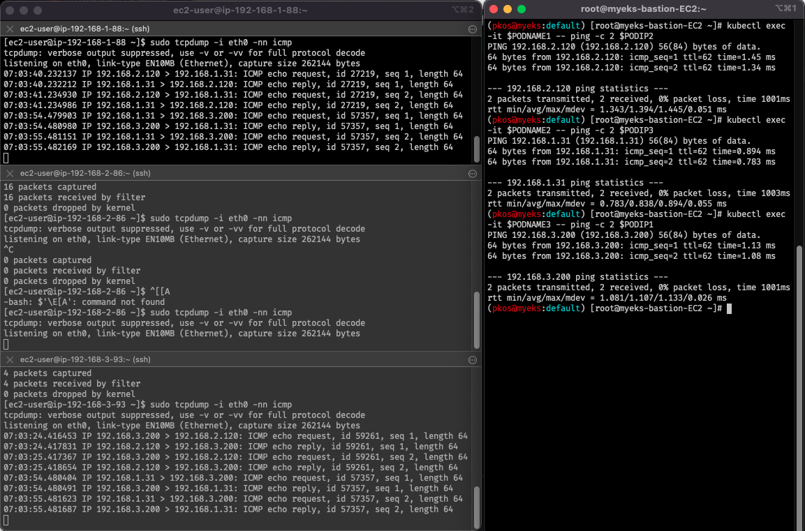
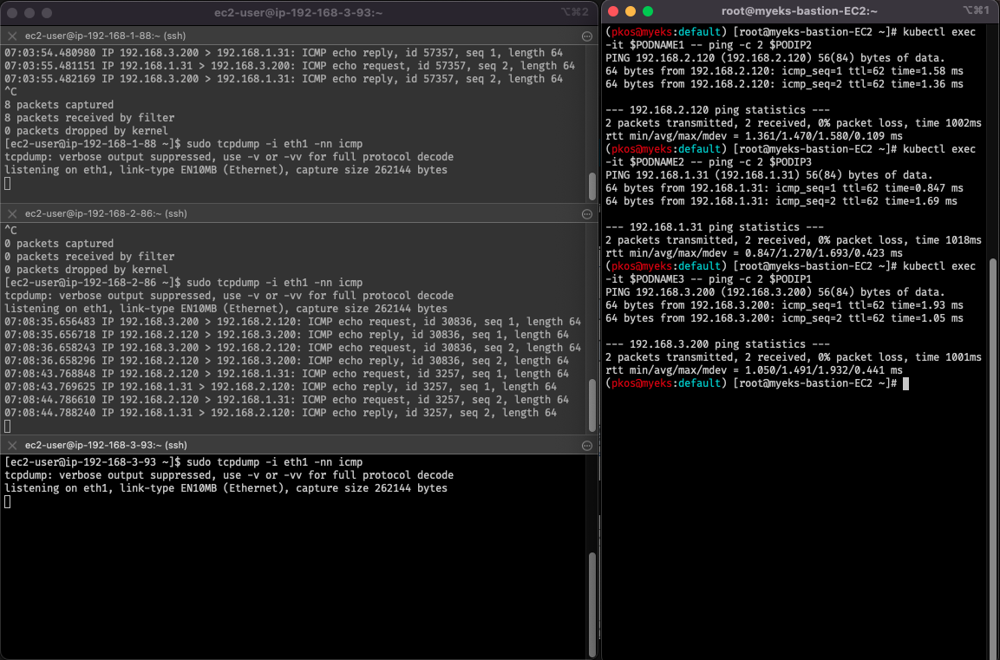
5. 데이터플레인(노드)에서 외부 통신
- EXTERNAL SNAT(Source Network Address Translation) 설정에 따라,
외부 통신 시 SNAT 사용 여부를 결정할 수 있음 - 아래 실습을 통해 확인
- 외부 ping 테스트
- 데이터플레인에서 정보(tcpdump, iptables) 확인
# 데이터플레인의 파드에서 외부 ping 테스트
kubectl exec -it $PODNAME1 -- ping -c 1 www.google.com
# 데이터플레인: TCPDUMP 확인 ($N3) 및 iptables 규칙 확인
sudo tcpdump -i any -nn icmp
sudo tcpdump -i eth0 -nn icmp
ip rule
ip route show table main
sudo iptables -L -n -v -t nat
sudo iptables -t nat -S
# AWS-SNAT-CHAIN-0, AWS-SNAT-CHAIN-1에 대한 정보 확인
sudo iptables -t nat -S | grep 'A AWS-SNAT-CHAIN'
# conntrack 확인
# 169.254.169.x : 인스턴스 메타데이터 서비스의 IPv4 주소
# 출처: https://zetawiki.com/wiki/IP%EC%A3%BC%EC%86%8C_169.254.169.254
sudo conntrack -L -n |grep -v '169.254.169'
# 데이터플레인에서 SNAT체인 모니터링 준비
watch -d 'sudo iptables -v --numeric --table nat --list AWS-SNAT-CHAIN-0; echo ; sudo iptables -v --numeric --table nat --list AWS-SNAT-CHAIN-1; echo ; sudo iptables -v --numeric --table nat --list KUBE-POSTROUTING'
# 데이터플레인의 파드에서 외부 ping 테스트
kubectl exec -it $PODNAME1 -- ping -i 0.1 www.google.com
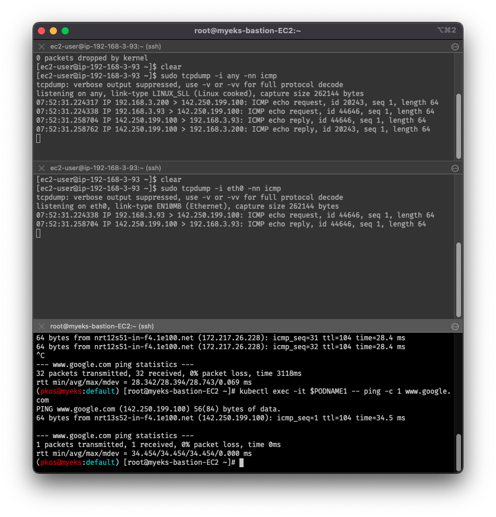
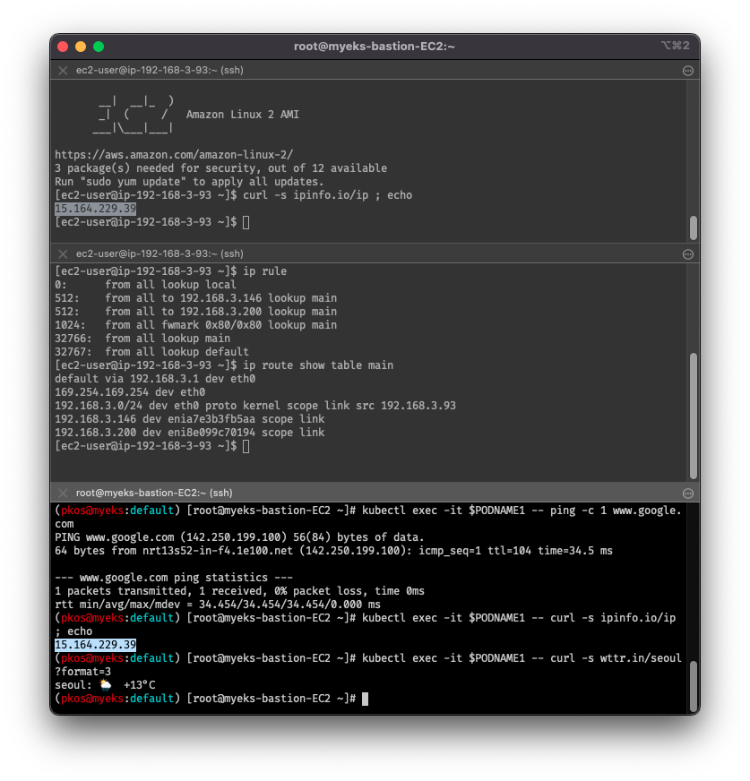
- 여태껏 $N1에 $PODNAME1이 있는 줄 알았는데, 예상값이 이상해서 찍어보니 $N3였음;
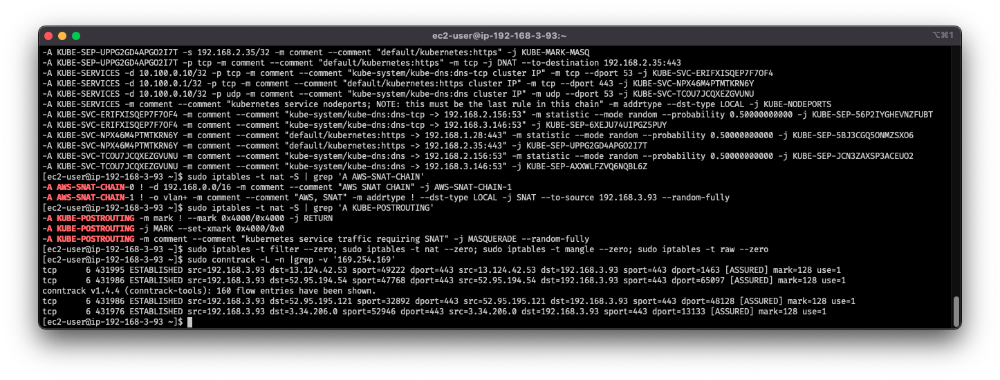
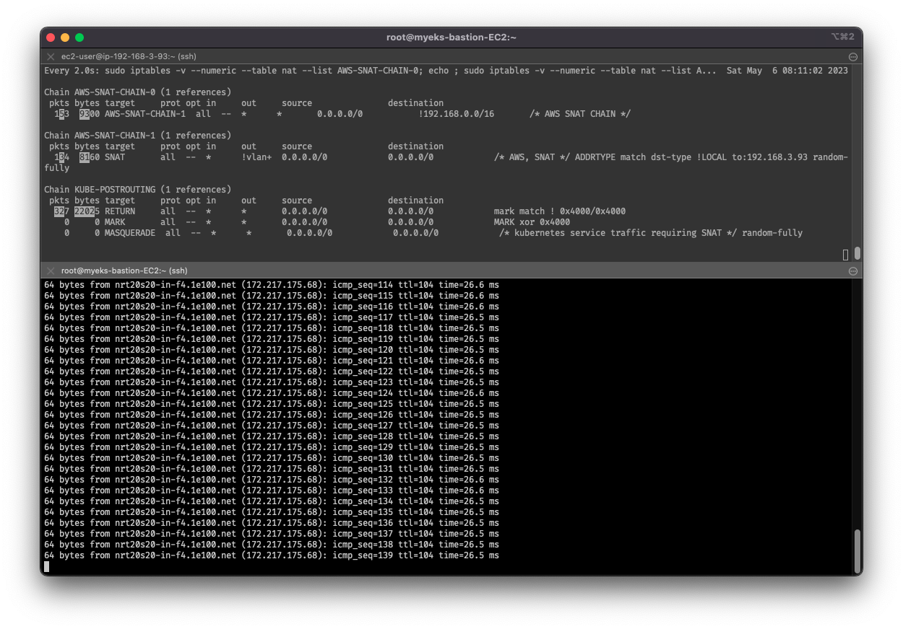
-
위에서 보다시피, AWS-SNAT-CHAIN-0에 의해 데이터플레인 CIDR대역이 아니면,
AWS-SNAT-CHAIN-1로 점프시켜서, 데이터플레인의 Private IP로 입혀서 외부로 내보낸다.- 그래서, 데이터플레인(노드)의 Public IP로 나가는 것을 볼 수 있다.
6. 데이터플레인(노드)에 파드 생성 갯수 제한
-
요약: ((MaxENI * (IPv4addr-1)) + 2)
- MaxENI:
Number of network interfaces for the instance type - IPv4addr:
the number of IP address per network interface
- MaxENI:
-
t3.medium 경우 :
- (3 * (6 - 1)) + 2 = 17개
- 그러나, aws-node 와 kube-proxy 2개 제외하면 15개
-
Secondary IPv4 address로는 각 인스턴스마다 제한이 있음.
- IPv4 접두사 위임(Prefix Delegation)으로 해결 가능하지만,
이번에는 다루지 않음(기본 내용으로도 살짝 부하)
- IPv4 접두사 위임(Prefix Delegation)으로 해결 가능하지만,
-
실습에서는 t3 타입의 정보 및 데이터플레인 내에서 할당 갯수를 확인한 다음,
실제로 파드를 생성해보면서 확인해본다.
# t3 타입의 정보(필터) 확인
aws ec2 describe-instance-types --filters Name=instance-type,Values=t3.* \
--query "InstanceTypes[].{Type: InstanceType, MaxENI: NetworkInfo.MaximumNetworkInterfaces, IPv4addr: NetworkInfo.Ipv4AddressesPerInterface}" \
--output table
# 데이터플레인 상세 정보 확인 : 노드 상세 정보의 Allocatable 에 pods 에 17개 정보 확인
kubectl describe node | grep Allocatable: -A7
# 데이터플레인에서 모니터링 대기
while true; do ip -br -c addr show && echo "--------------" ; date "+%Y-%m-%d %H:%M:%S" ; sleep 1; done
# 컨트롤플레인에서 모니터링 대기
watch -d 'kubectl get pods -o wide'
# 컨트롤플레인에서 파드 생성 명령
curl -s -O https://raw.githubusercontent.com/gasida/PKOS/main/2/nginx-dp.yaml
kubectl apply -f nginx-dp.yaml
# 컨트롤플레인에서 파드 증가 테스트(50개) 및 실패 확인: Too many pods
kubectl scale deployment nginx-deployment --replicas=50
kubectl get pods | grep Pending
kubectl describe pod ${Pending된 파드} | grep Events: -A5
# 디플로이먼트 삭제
kubectl delete deploy nginx-deployment
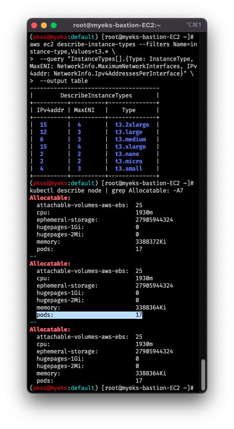
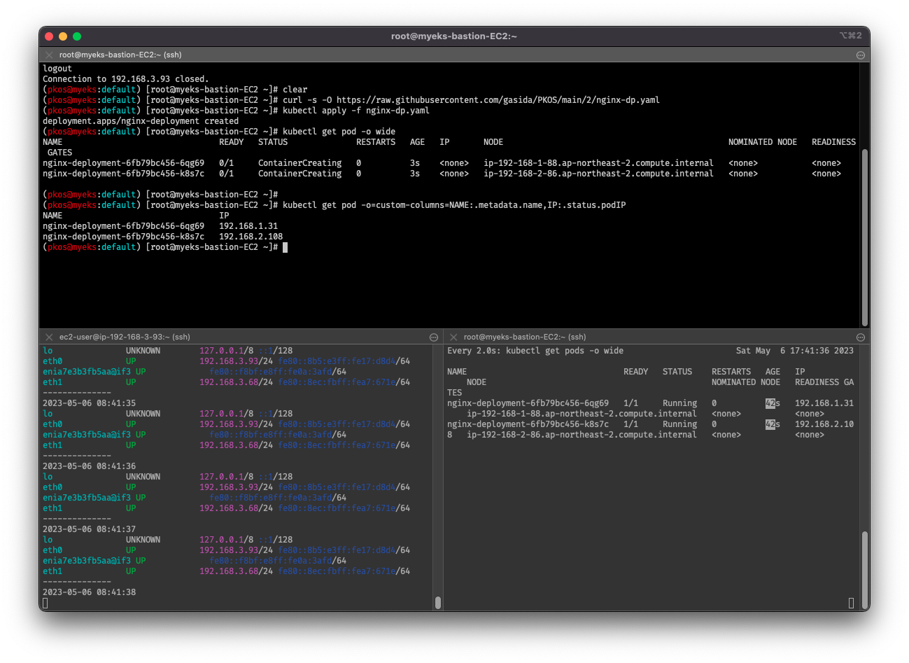
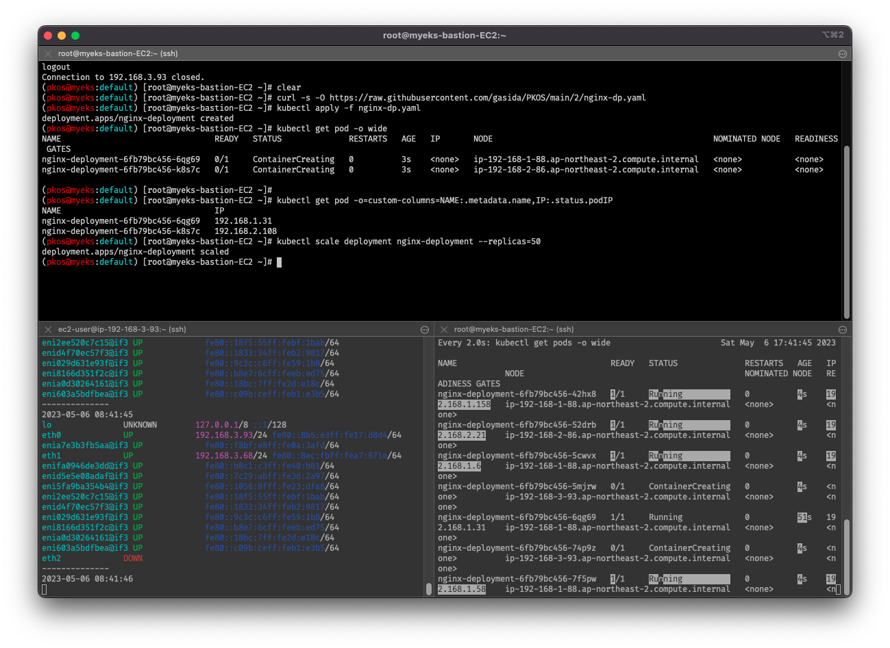
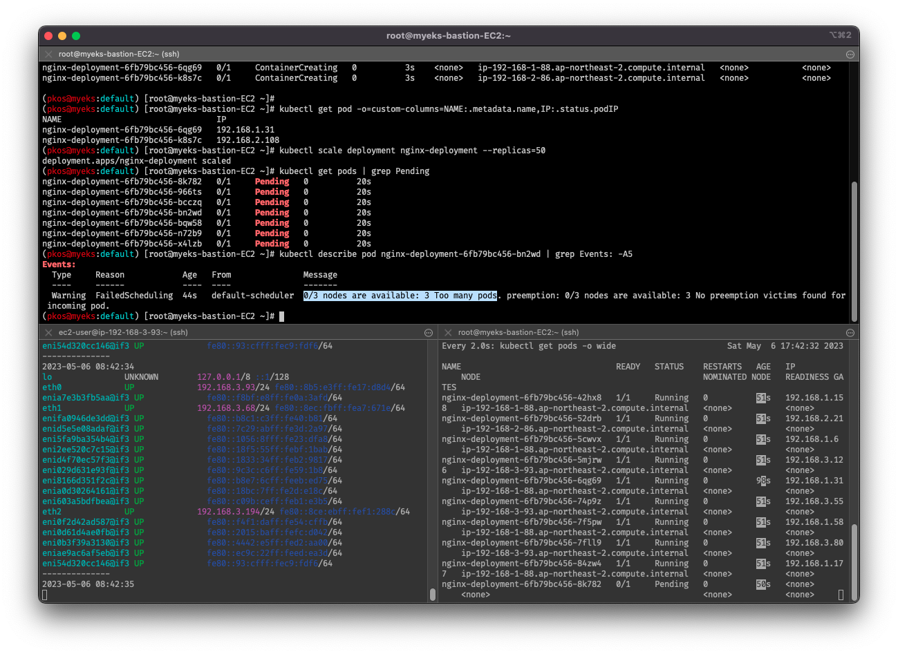
7. Service & AWS LoadBalancer Controller
-
서비스 방법에는 아래와 같은 종류가 있음
- ClusterIP:
- 컨트롤플레인의 iptables룰에 의해 데이터플레인 내의
Pod IP로 접근 - 클러스터 내에서만 접근 가능
- 컨트롤플레인의 iptables룰에 의해 데이터플레인 내의
- NodePort:
- 고정 포트(NodePort)로 각 데이터플레인의 IP에 접근
- 각 데이터플레인(노드)에 있는 iptables룰에 의해
Pod IP로 접근
- LoadBalancer: 기본값
- 클라우드 공급자(CSP)의 로드밸런서를 활용, 데이터플레인 앞에 로드밸런서가 있음.
- (NLB 인스턴스 유형 기준) 이걸 거친 다음 각 데이터플레인의 iptables를 타고, 파드로 접근
- Service (LoadBalancer Controller + NLB IP모드)
- w/AWS VPC CNI: 이번 실습에서 AWS VPC CNI를 쓰는 이유
- iptables를 타지 않고, Bypass로 바로
Pod IP로 접근 - 이게 가능한 이유는 별도의 LB 컨트롤러 파드가 있고,
여기에 Pod IP 정보를 지속적으로 제공
- ClusterIP:
-
그래서 마지막의 방법을 쓰려면 OIDC를 활용해서, LB컨트롤러 IAM 정책을 적용해야함.
- OIDC: OpenID Connect(IdP)
- OAuth2.0와 거의 유사하다고 김세웅님께서 설명해주심.
- 이전 스터디에서 IAM 정책이 적용되어서 중복 에러가 뜨지만, 확인에는 문제 없음.
- 이렇게 권한을 주는 것을 IRSA(IAM Roles Service Account) 라고 함.
- 출처: IRSA@채널톡
- OIDC: OpenID Connect(IdP)
# OIDC 확인
aws eks describe-cluster --name $CLUSTER_NAME --query "cluster.identity.oidc.issuer" --output text
aws iam list-open-id-connect-providers | jq
# IAM Policy (AWSLoadBalancerControllerIAMPolicy) 생성
curl -o iam_policy.json https://raw.githubusercontent.com/kubernetes-sigs/aws-load-balancer-controller/v2.4.7/docs/install/iam_policy.json
# 이미 있다면, 아래의 명령어는 에러를 발생시키지만 무시해도 됨.
aws iam create-policy --policy-name AWSLoadBalancerControllerIAMPolicy --policy-document file://iam_policy.json
# 생성된 IAM Policy Arn 확인
aws iam list-policies --scope Local
aws iam get-policy --policy-arn arn:aws:iam::$ACCOUNT_ID:policy/AWSLoadBalancerControllerIAMPolicy
aws iam get-policy --policy-arn arn:aws:iam::$ACCOUNT_ID:policy/AWSLoadBalancerControllerIAMPolicy --query 'Policy.Arn'
# IRSA 생성 w/cloudformation
eksctl create iamserviceaccount --cluster=$CLUSTER_NAME --namespace=kube-system --name=aws-load-balancer-controller \
--attach-policy-arn=arn:aws:iam::$ACCOUNT_ID:policy/AWSLoadBalancerControllerIAMPolicy --override-existing-serviceaccounts --approve
# IRSA 및 서비스 어카운트 확인
eksctl get iamserviceaccount --cluster $CLUSTER_NAME
kubectl get serviceaccounts -n kube-system aws-load-balancer-controller -o yaml | yh
# Helm Chart 설치 for AWS LoadBalancer Controller
helm repo add eks https://aws.github.io/eks-charts
helm repo update
helm install aws-load-balancer-controller eks/aws-load-balancer-controller -n kube-system --set clusterName=$CLUSTER_NAME \
--set serviceAccount.create=false --set serviceAccount.name=aws-load-balancer-controller
kubectl get crd
kubectl get deployment -n kube-system aws-load-balancer-controller
kubectl describe deploy -n kube-system aws-load-balancer-controller | grep 'Service Account'
# 클러스터롤 확인
kubectl describe clusterrolebindings.rbac.authorization.k8s.io aws-load-balancer-controller-rolebinding
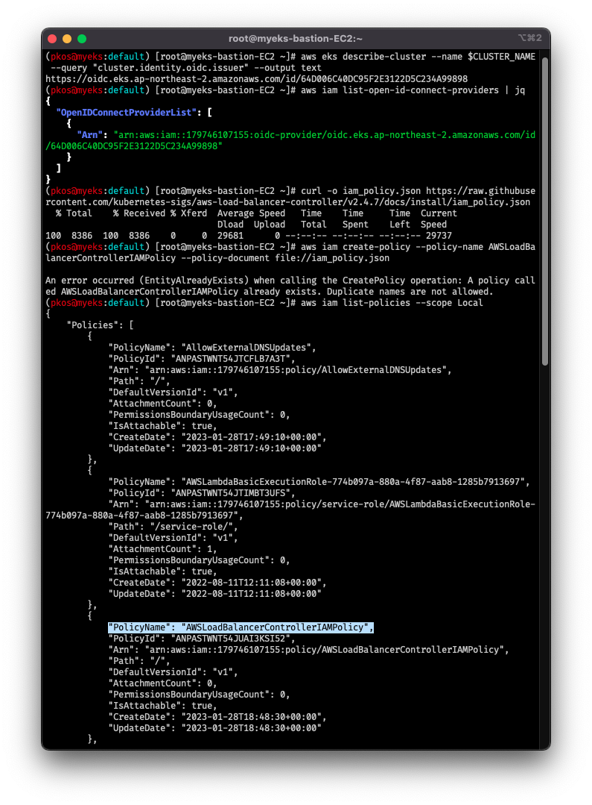
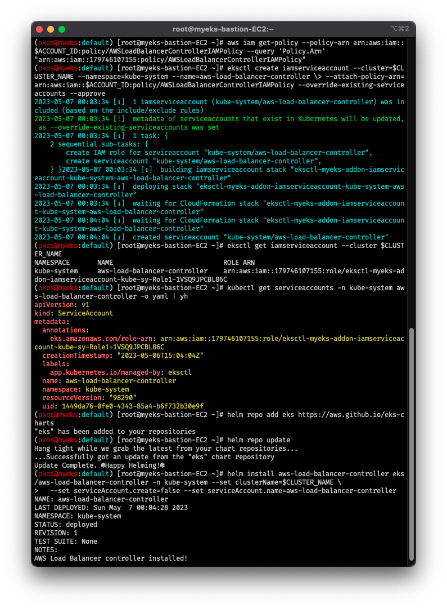
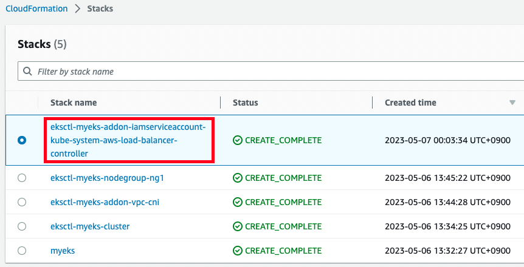
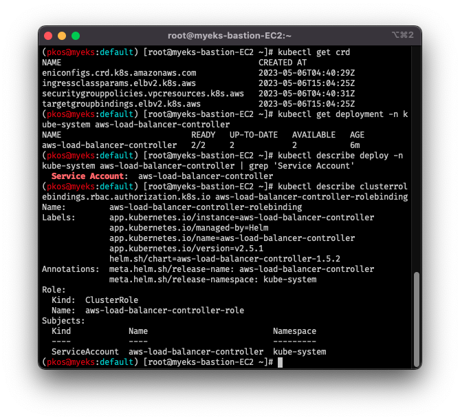
- 웹 콘솔에서 IAM 신뢰관계(Trust Relationships)를 확인
- 평소에는
sts:AssumeRole을 많이 봐왔는데, 이번에는sts:AssumeRoleWithWebIdentity를 볼 수 있음. - IAM신뢰관계@AWS
- 평소에는
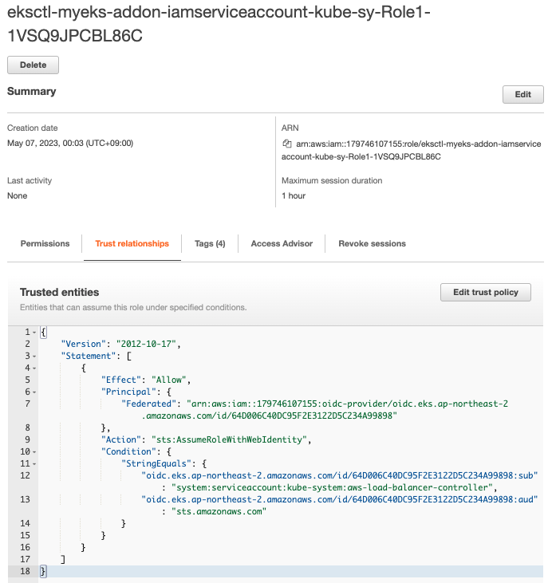
7-1. NLB를 활용한 서비스/파드 생성
# 모니터링
watch -d kubectl get pod,svc,ep
# 디플로이먼트 & 서비스 생성
curl -s -O https://raw.githubusercontent.com/gasida/PKOS/main/2/echo-service-nlb.yaml
cat echo-service-nlb.yaml | yh
kubectl apply -f echo-service-nlb.yaml
# 확인
kubectl get deploy,pod
kubectl get svc,ep,ingressclassparams,targetgroupbindings
kubectl get targetgroupbindings -o json | jq
# AWS ELB(NLB) 정보 확인
aws elbv2 describe-load-balancers | jq
aws elbv2 describe-load-balancers --query 'LoadBalancers[*].State.Code' --output text
# 웹 접속 주소 확인
kubectl get svc svc-nlb-ip-type -o jsonpath={.status.loadBalancer.ingress[0].hostname} | awk '{ print "Pod Web URL = http://"$1 }'
# 파드 로깅 모니터링
kubectl logs -l app=deploy-websrv -f
# 분산 접속 확인
NLB=$(kubectl get svc svc-nlb-ip-type -o jsonpath={.status.loadBalancer.ingress[0].hostname})
curl -s $NLB
for i in {1..100}; do curl -s $NLB | grep Hostname ; done | sort | uniq -c | sort -nr
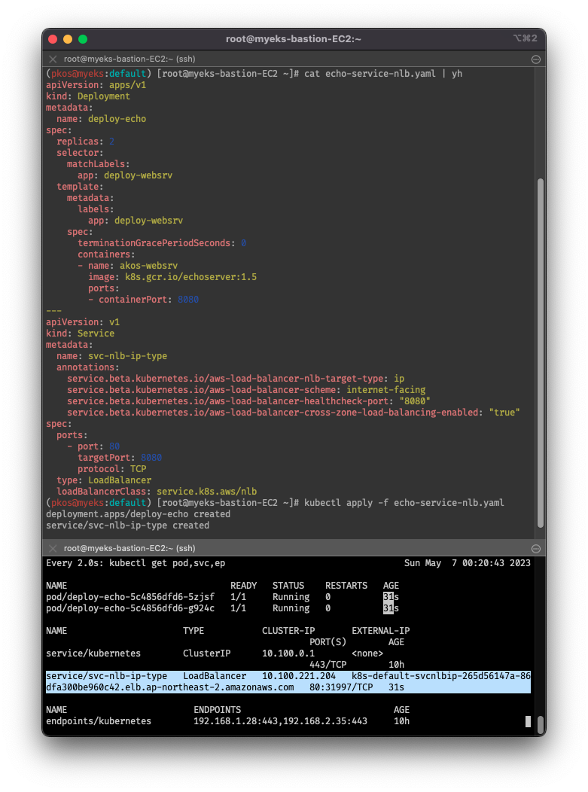
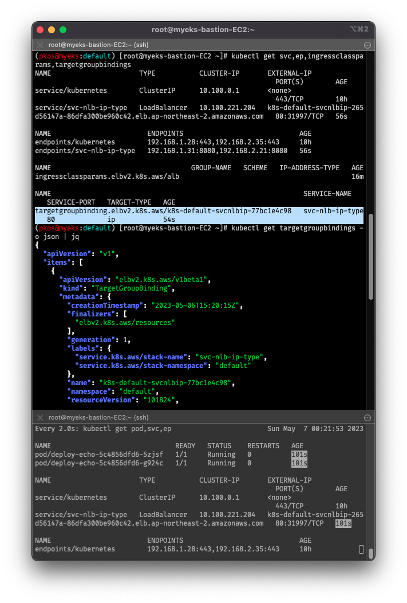
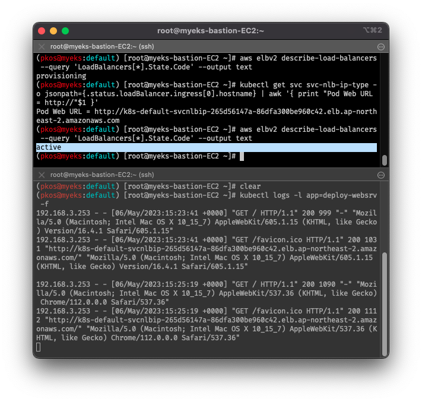
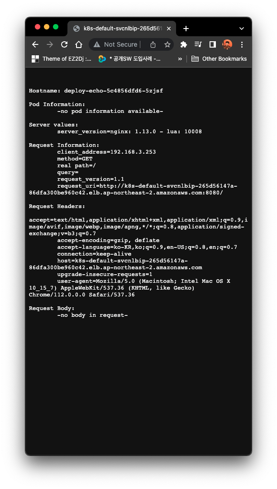
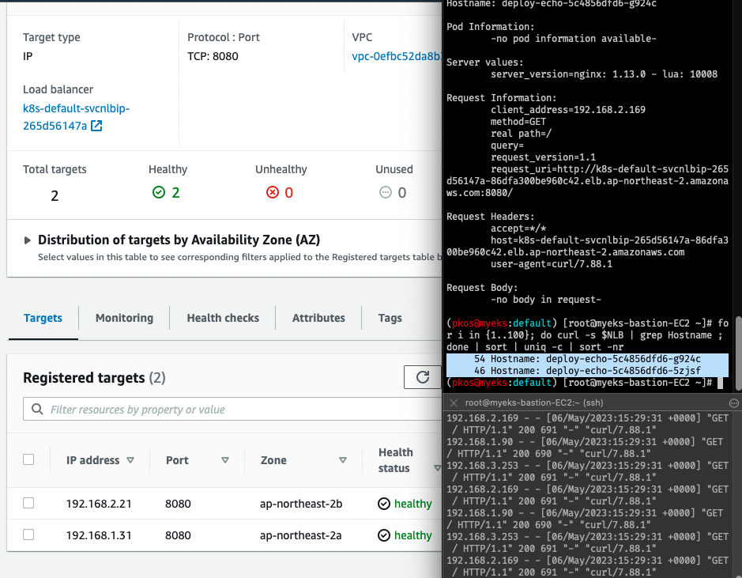
7-2. Scaling down/up
- 파드 2개 -> 1개 -> 3개로 스케일링
- 특히, draining 중인 파드는 무시하고 스케일링을 진행함.
- 당연한 말이겠지만, LB Controller 파드가 따로 있기 때문에 가능한 일
# 컨트롤플레인에서 레플리카 수 변경 (2 -> 1 -> 3)
# 웹 콘솔에서 NLB 상태 확인
kubectl scale deployment deploy-echo --replicas=1
kubectl scale deployment deploy-echo --replicas=3
# AWS LB Controller
kubectl describe deploy -n kube-system aws-load-balancer-controller | grep 'Service count'
# [AWS LB Ctrl] 클러스터 롤 바인딩 정보 확인
kubectl describe clusterrolebindings.rbac.authorization.k8s.io aws-load-balancer-controller-rolebinding
# [AWS LB Ctrl] 클러스터롤 확인
kubectl describe clusterroles.rbac.authorization.k8s.io aws-load-balancer-controller-role
# 실습 리소스 삭제
kubectl delete deploy deploy-echo; kubectl delete svc svc-nlb-ip-type
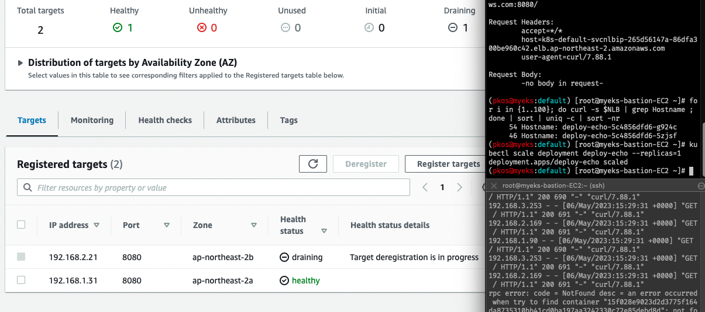
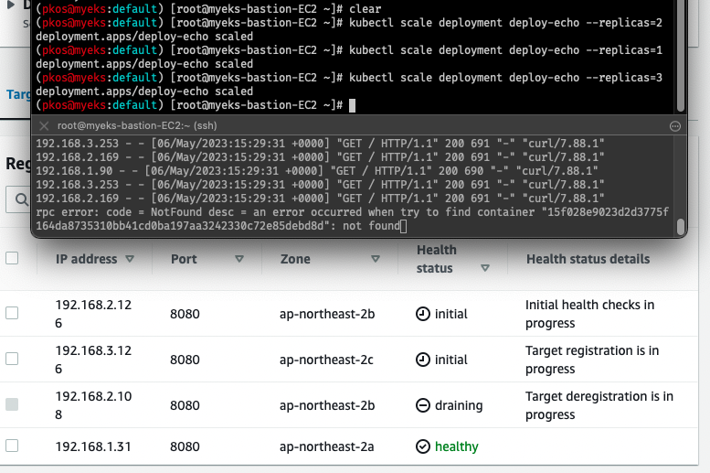
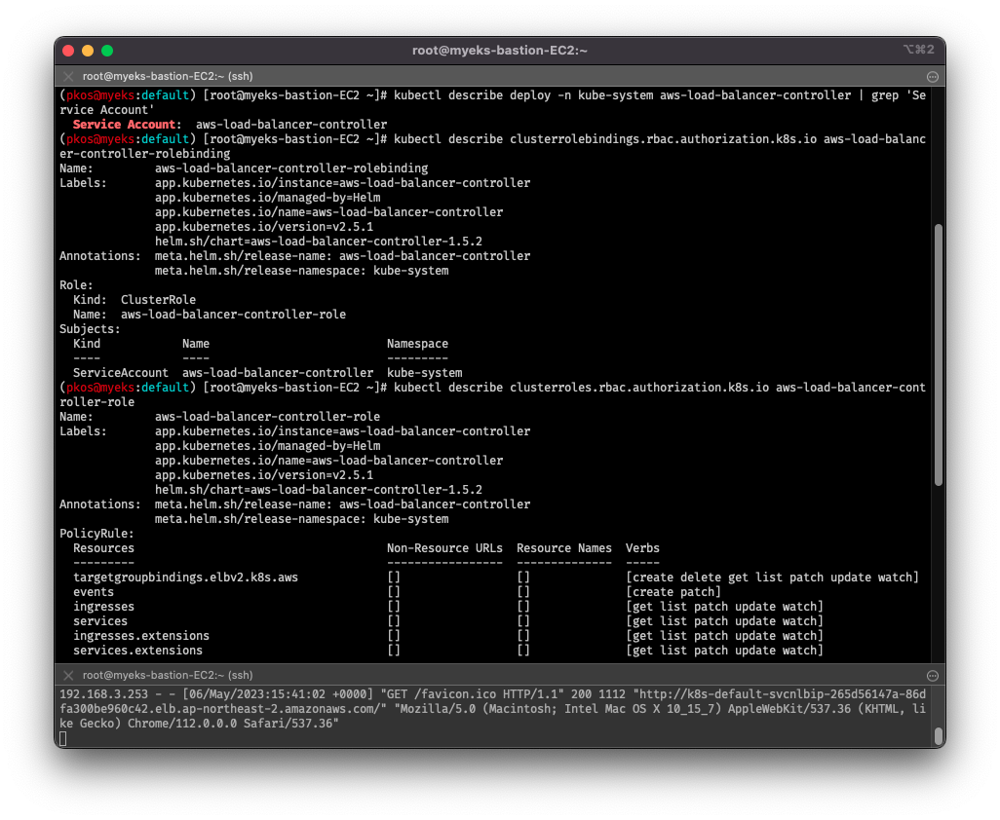
7-3. NLB 대상 타겟을 Instance mode로 설정해보기
- NLB IP Target & Proxy Protocol v2 활성화 : NLB에서 바로 파드로 인입 및 ClientIP 확인 설정
# 생성
cat <<EOF | kubectl create -f -
apiVersion: apps/v1
kind: Deployment
metadata:
name: gasida-web
spec:
replicas: 1
selector:
matchLabels:
app: gasida-web
template:
metadata:
labels:
app: gasida-web
spec:
terminationGracePeriodSeconds: 0
containers:
- name: gasida-web
image: gasida/httpd:pp
ports:
- containerPort: 80
---
apiVersion: v1
kind: Service
metadata:
name: svc-nlb-ip-type-pp
annotations:
service.beta.kubernetes.io/aws-load-balancer-nlb-target-type: ip
service.beta.kubernetes.io/aws-load-balancer-scheme: internet-facing
service.beta.kubernetes.io/aws-load-balancer-cross-zone-load-balancing-enabled: "true"
service.beta.kubernetes.io/aws-load-balancer-proxy-protocol: "*"
spec:
ports:
- port: 80
targetPort: 80
protocol: TCP
type: LoadBalancer
loadBalancerClass: service.k8s.aws/nlb
selector:
app: gasida-web
EOF
# 확인
kubectl get svc,ep
kubectl describe svc svc-nlb-ip-type-pp
kubectl describe svc svc-nlb-ip-type-pp | grep Annotations: -A5
# apache에 proxy protocol 활성화 확인
kubectl exec deploy/gasida-web -- apachectl -t -D DUMP_MODULES
kubectl exec deploy/gasida-web -- cat /usr/local/apache2/conf/httpd.conf
# 접속 확인
NLB=$(kubectl get svc svc-nlb-ip-type-pp -o jsonpath={.status.loadBalancer.ingress[0].hostname})
curl -s $NLB
# 지속적인 접속 시도 : 아래 상세 동작 확인 시 유용(패킷 덤프 등)
while true; do curl -s --connect-timeout 1 $NLB; echo "----------" ; date "+%Y-%m-%d %H:%M:%S" ; sleep 1; done
# 로그 확인
kubectl logs -l app=gasida-web -f
# 삭제
kubectl delete deploy gasida-web; kubectl delete svc svc-nlb-ip-type-pp
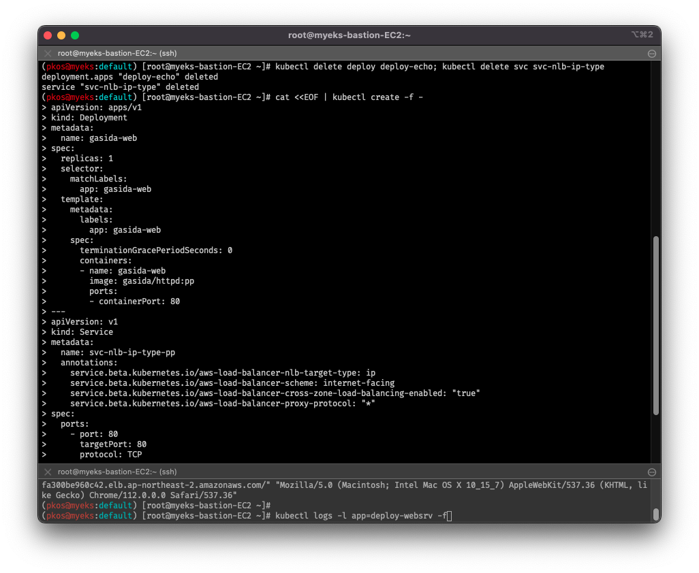
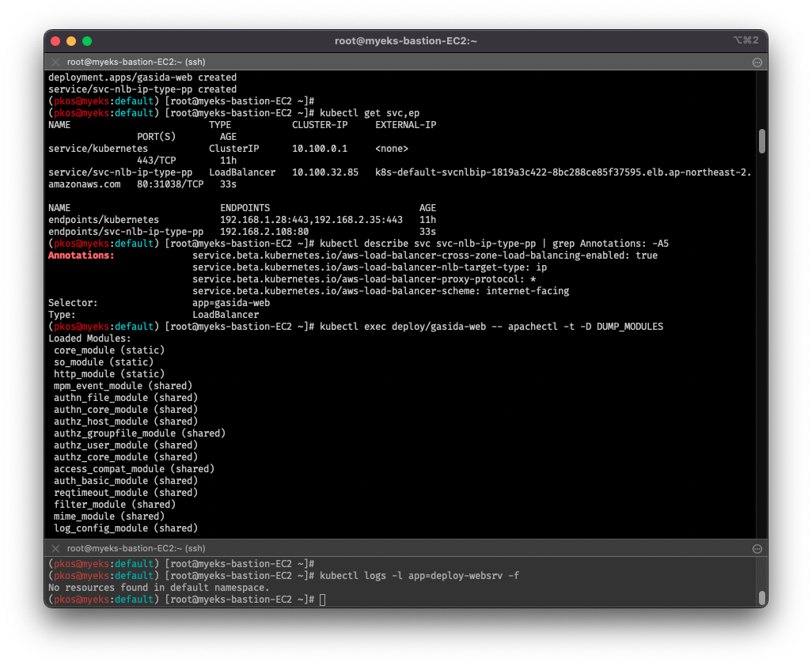
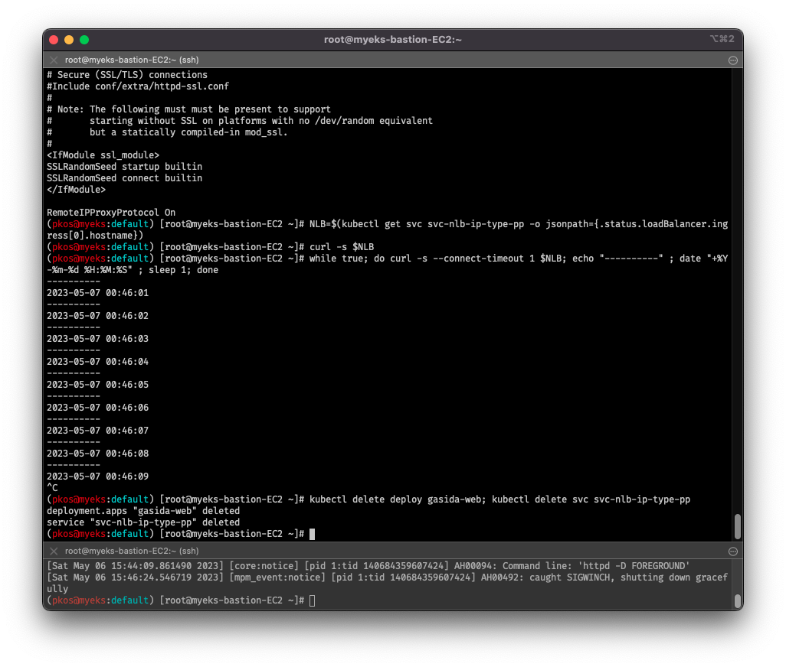
8. Ingress
-
클러스터 내부의 서비스(ClusterIP, NodePort, Loadbalancer)를 외부로 노출(HTTP/HTTPS)
-
Web Proxy 역할: 어라 그러면, ClusterIP를 써도….(?)
-
AWS VPC CNI에서 AWS LB 컨트롤러 + Ingress (ALB) IP 모드 동작- 바로 파드의 IP로 통신이 가능
# 게임 파드와 Service, Ingress 배포
curl -s -O https://raw.githubusercontent.com/gasida/PKOS/main/3/ingress1.yaml
kubectl apply -f ingress1.yaml
# 모니터링
watch -d kubectl get pod,ingress,svc,ep -n game-2048
# 생성 확인
kubectl get-all -n game-2048
kubectl get ingress,svc,ep,pod -n game-2048
kubectl get targetgroupbindings -n game-2048
# Ingress 확인
kubectl describe ingress -n game-2048 ingress-2048
# 게임 접속 : ALB 주소로 웹 접속
kubectl get ingress -n game-2048 ingress-2048 -o jsonpath={.status.loadBalancer.ingress[0].hostname} | awk '{ print "Game URL = http://"$1 }'
# 파드 IP 확인
kubectl get pod -n game-2048 -owide
# 파드 스케일 모니터링
watch kubectl get pod -n game-2048
# 파드 3개로 증가
kubectl scale deployment -n game-2048 deployment-2048 --replicas 3
# 파드 1개로 감소
kubectl scale deployment -n game-2048 deployment-2048 --replicas 1
# 삭제
kubectl delete ingress ingress-2048 -n game-2048
kubectl delete svc service-2048 -n game-2048 && kubectl delete deploy deployment-2048 -n game-2048 && kubectl delete ns game-2048
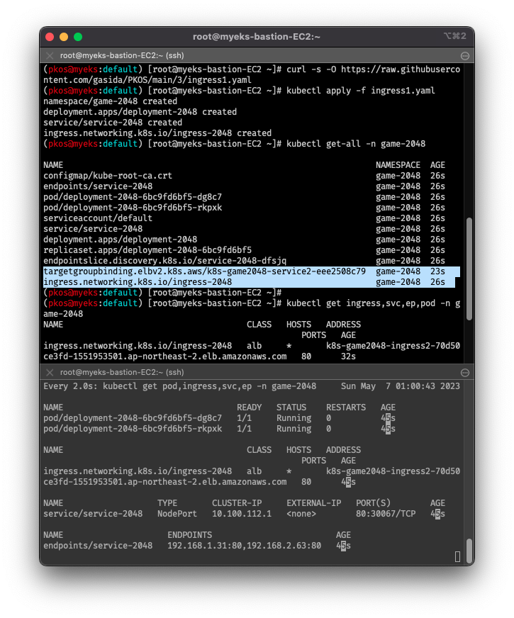
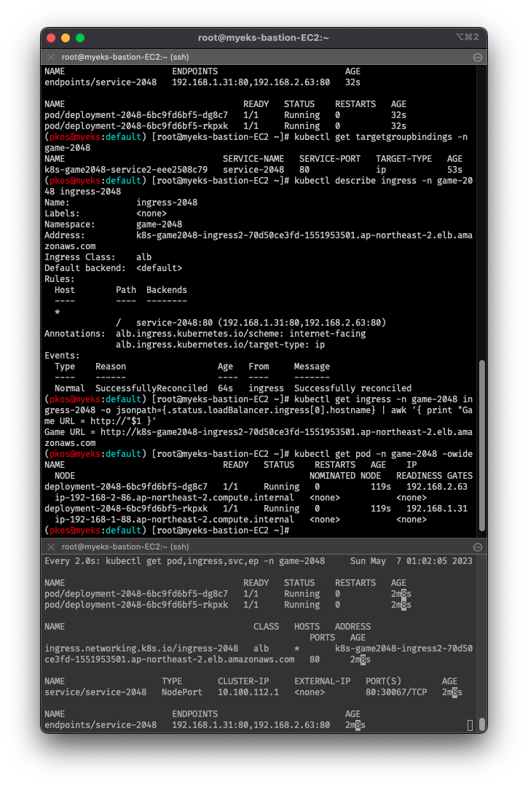
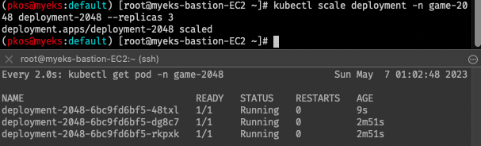
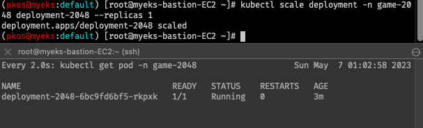
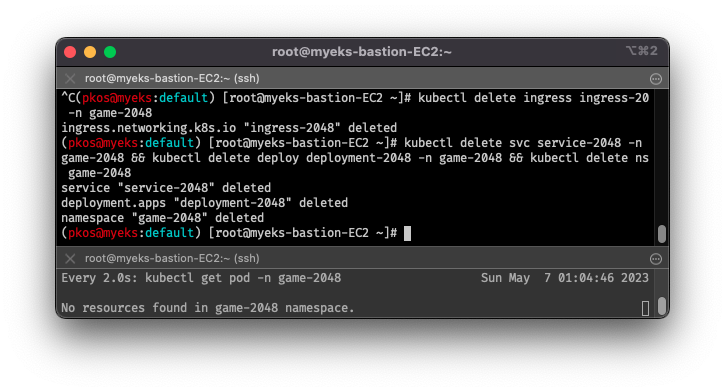
9. External DNS
- 외부 DNS 서비스를 통해 도메인을 통해 접속 가능하도록 설정
- AWS Route53에 Public 도메인을 등록시켜놓았음
- ExternalDNS CTRL 권한 주는 방법 3가지:
- Node IAM Role: EKS 원클릭 배포 시 설정되어 있음
- eksctl create cluster … –external-dns-access …
- Static credentials
- IRSA
- Node IAM Role: EKS 원클릭 배포 시 설정되어 있음
9-1. Route53 정보 확인 및 변수 지정
- 중간에 명령어가 잘못되었는지, 제대로 값이 뜨지 않는 것이 있었음
# 도메인 변수 지정
# MyDomain=<소유한 도메인>
MyDomain=awskops.click
# Route 53 도메인 ID 조회 및 변수 지정
aws route53 list-hosted-zones-by-name --dns-name "${MyDomain}." | jq
MyDnzHostedZoneId=`aws route53 list-hosted-zones-by-name --dns-name "${MyDomain}." --query "HostedZones[0].Id" --output text`
echo $MyDnzHostedZoneId
# A 레코드 타입 조회: 정상적으로 조회되지 않음
aws route53 list-resource-record-sets --hosted-zone-id "${MyDnzHostedZoneId}" --query "ResourceRecordSets[?Type == 'A'].Name" --output text
9-2. ExternalDNS 설치
# Route53 변수 확인
echo $MyDomain, $MyDnzHostedZoneId
# ExternalDNS 배포
curl -s -O https://raw.githubusercontent.com/gasida/PKOS/main/aews/externaldns.yaml
MyDomain=$MyDomain MyDnzHostedZoneId=$MyDnzHostedZoneId envsubst < externaldns.yaml | kubectl apply -f -
# 확인 및 로그 모니터링
kubectl get pod -l app.kubernetes.io/name=external-dns -n kube-system
kubectl logs deploy/external-dns -n kube-system -f
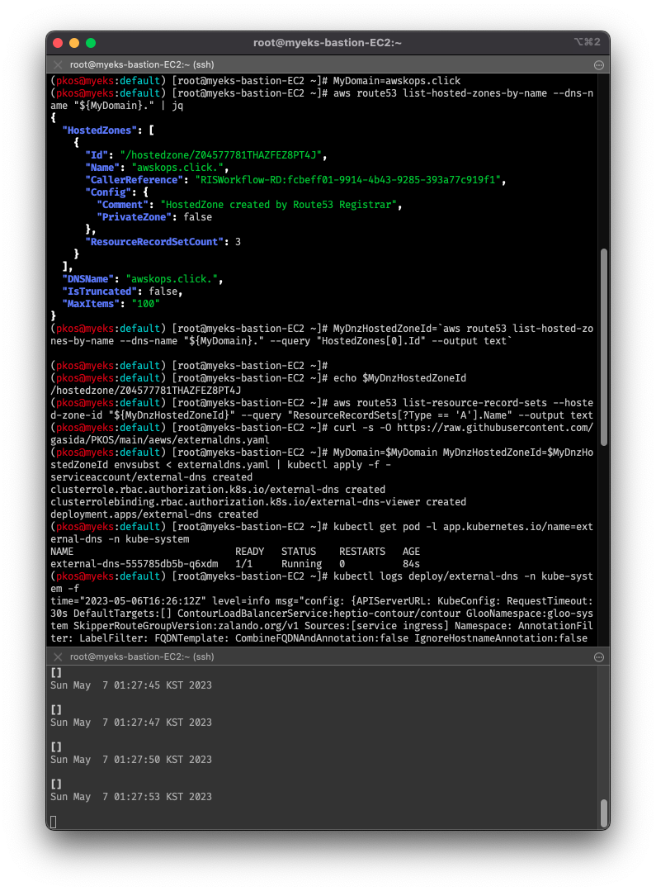
9-3. Service(NLB) + 도메인 연동(ExternalDNS)
- 리소스 삭제 시, ExternalDNS에 의해 A레코드도 함께 제거됨을 확인
# 모니터링 준비 및 로그 조회
watch -d 'kubectl get pod,svc'
kubectl logs deploy/external-dns -n kube-system -f
# 테트리스 디플로이먼트 배포
cat <<EOF | kubectl create -f -
apiVersion: apps/v1
kind: Deployment
metadata:
name: tetris
labels:
app: tetris
spec:
replicas: 1
selector:
matchLabels:
app: tetris
template:
metadata:
labels:
app: tetris
spec:
containers:
- name: tetris
image: bsord/tetris
---
apiVersion: v1
kind: Service
metadata:
name: tetris
annotations:
service.beta.kubernetes.io/aws-load-balancer-nlb-target-type: ip
service.beta.kubernetes.io/aws-load-balancer-scheme: internet-facing
service.beta.kubernetes.io/aws-load-balancer-cross-zone-load-balancing-enabled: "true"
service.beta.kubernetes.io/aws-load-balancer-backend-protocol: "http"
#service.beta.kubernetes.io/aws-load-balancer-healthcheck-port: "80"
spec:
selector:
app: tetris
ports:
- port: 80
protocol: TCP
targetPort: 80
type: LoadBalancer
loadBalancerClass: service.k8s.aws/nlb
EOF
# 배포 확인 : CLB 배포 확인
kubectl get deploy,svc,ep tetris
# NLB에 ExternanDNS 로 도메인 연결
kubectl annotate service tetris "external-dns.alpha.kubernetes.io/hostname=tetris.$MyDomain"
# Route53에 A레코드 확인
# jq 까지 하는 경우 정상적으로 조회되지 않음;;
aws route53 list-resource-record-sets --hosted-zone-id "${MyDnzHostedZoneId}" --query "ResourceRecordSets[?Type == 'A']" | jq
aws route53 list-resource-record-sets --hosted-zone-id "${MyDnzHostedZoneId}" --query "ResourceRecordSets[?Type == 'A'].Name" | jq .[]
# Public IP(도메인 DNS) 확인
dig +short tetris.$MyDomain @8.8.8.8
dig +short tetris.$MyDomain
# 도메인 체크
echo -e "My Domain Checker = https://www.whatsmydns.net/#A/tetris.$MyDomain"
# 웹 접속 주소 확인 및 접속
echo -e "Tetris Game URL = http://tetris.$MyDomain"
# 리소스 삭제
kubectl delete deploy,svc tetris
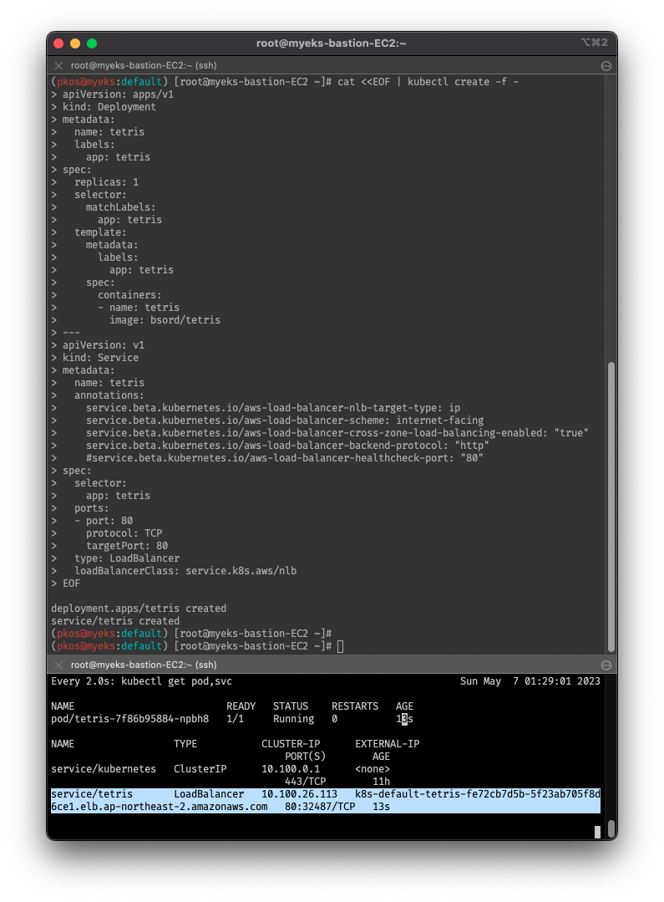
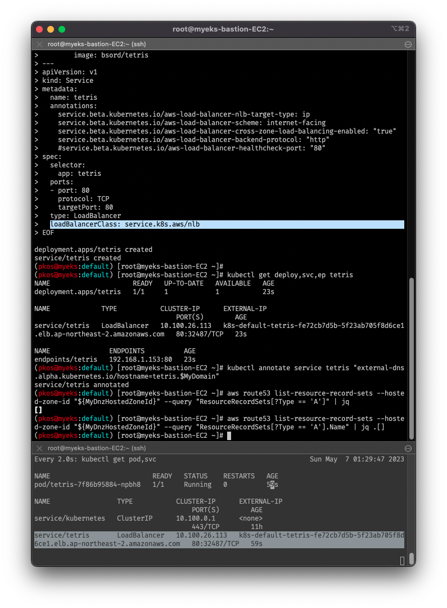
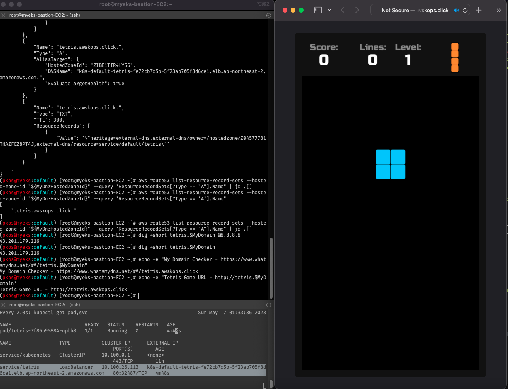
10. Envoy (반쪽 실습)
- istio를 위해 설치는 했으나, istio가 제대로 안되서 Envoy만 기재
- Envoy: L7 Proxy, istio의 Sidecar proxy
- istiod: 컨트롤플레인
- Envoy: 데이터플레인 (istio-proxy > envoy)
- istio-proxy 안에 Envoy가 들어있다는 것
# 컨트롤플레인에 Envoy 설치
sudo rpm --import 'https://rpm.dl.getenvoy.io/public/gpg.CF716AF503183491.key'
curl -sL 'https://rpm.dl.getenvoy.io/public/config.rpm.txt?distro=el&codename=7' > /tmp/tetrate-getenvoy-rpm-stable.repo
sudo yum-config-manager --add-repo '/tmp/tetrate-getenvoy-rpm-stable.repo'
sudo yum makecache --disablerepo='*' --enablerepo='tetrate-getenvoy-rpm-stable' -y
sudo yum install getenvoy-envoy -y
envoy --version
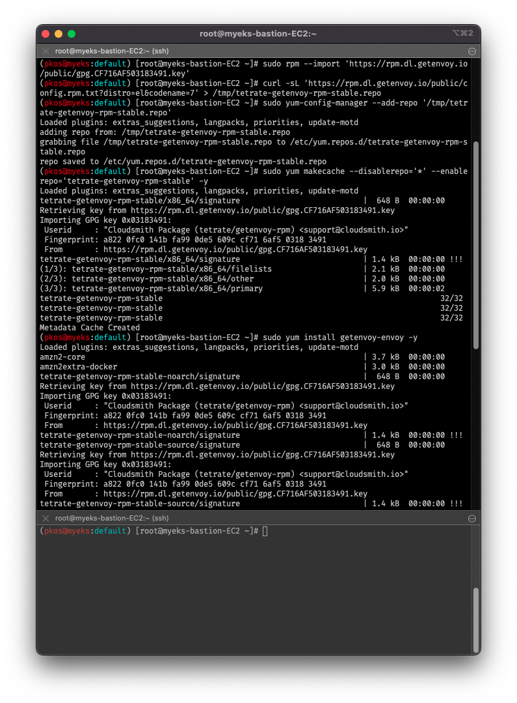
10-1. Envoy proxy 실습 w.Envoy-demo
- Envoy 상에서 웹서버 구동을 위한
myhome.yaml생성 방법을 이해하지 못함- 직전까지 하여, 데모 페이지 및 어드민 페이지 확인
# 데모 config 적용하여 실행
# `connect_timeout` missing 에러 출력되면서 실행 실패
curl -O https://www.envoyproxy.io/docs/envoy/latest/_downloads/92dcb9714fb6bc288d042029b34c0de4/envoy-demo.yaml
envoy -c envoy-demo.yaml
# connect_timeout 추가 후 다시 실행
sed -i'' -r -e "/dns_lookup_family/a\ connect_timeout: 5s" envoy-demo.yaml
envoy -c envoy-demo.yaml
# 정보 확인
# ... 0.0.0.0:10000 0.0.0.0:* users:(("envoy" ...
ss -tnlp
# 접속 테스트
curl -s http://127.0.0.1:10000 | grep -o "<title>.*</title>"
<title>Envoy Proxy - Home</title>
# envoy 데모 페이지 확인
echo -e "Envoy Proxy Demo = http://$(curl -s ipinfo.io/ip):10000"
# 연결 정보 확인
ss -tnp
# 기존 envoy 실행 취소 후 (관리자페이지) 설정 덮어쓰기
cat <<EOT> envoy-override.yaml
admin:
address:
socket_address:
address: 0.0.0.0
port_value: 9902
EOT
envoy -c envoy-demo.yaml --config-yaml "$(cat envoy-override.yaml)"
# 웹브라우저에서 http://192.168.10.254:9902 접속 확인
# 어드민 페이지 접속 확인
echo -e "Envoy Proxy Demo = http://$(curl -s ipinfo.io/ip):9902"
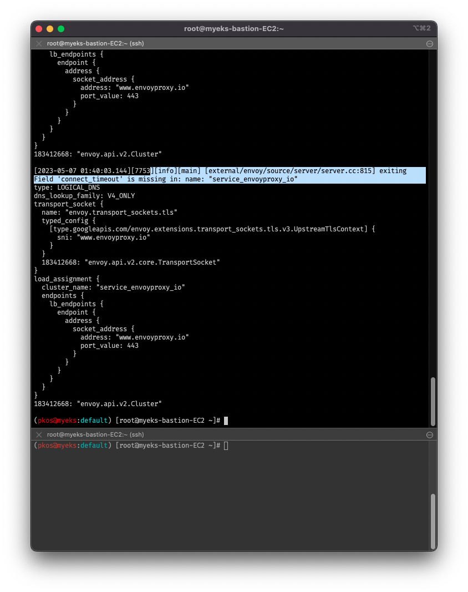
11. 파드간 속도 측정
- iperf3:
- 서버 모드로 동작하는 단말과 클라이언트 모드로 동작하는 단말로 구성해서 최대 네트워크 대역폭 측정
- TCP, UDP, SCTP 지원
11-1. iperf3 배포
- 서버 모드와 클라이언트 모드가 각각 다른 데이터플레인에 배포되어야 함
- 실제 실습의 경우에는 $N1에 서버 모드, $N3에 클라이언트 모드 배포 확인
# 배포
curl -s -O https://raw.githubusercontent.com/gasida/PKOS/main/aews/k8s-iperf3.yaml
kubectl apply -f k8s-iperf3.yaml
# 확인 : 서버와 클라이언트가 다른 데이터플레인에 배포되었는지 확인
kubectl get deploy,svc,pod -owide
# 서버 파드 로그 확인 : 기본 5201 포트 Listen
kubectl logs -l app=iperf3-server -f
11-2. iperf3 테스트
- TCP 5201, 측정시간 5초
- UDP 사용, 역방향 모드(-R)
- TCP, 쌍방향 모드(-R)
- 해당사항 실습 누락함
- TCP 다중 스트림(30개), -P(number of parallel client streams to run)
# 공통 모니터링
# 서버 파드 로그 확인 : 기본 5201 포트 Listen
kubectl logs -l app=iperf3-server -f
# 1. TCP 5201, 측정시간 5초
kubectl exec -it deploy/iperf3-client -- iperf3 -c iperf3-server -t 5
# 2. UDP 사용, 역방향 모드(-R)
kubectl exec -it deploy/iperf3-client -- iperf3 -c iperf3-server -u -b 20G
# 3. TCP, 쌍방향 모드(-R)
kubectl exec -it deploy/iperf3-client -- iperf3 -c iperf3-server -t 5 --bidir
# 4. TCP 다중 스트림(30개), -P(number of parallel client streams to run)
kubectl exec -it deploy/iperf3-client -- iperf3 -c iperf3-server -t 10 -P 2
# 실습 리소스 삭제
kubectl delete -f k8s-iperf3.yaml
reference

kkumtree
Source code on GitHub
© 2025 kkumtree and contributors All rights reserved.
Licensed under
CC BY-NC-ND 4.0